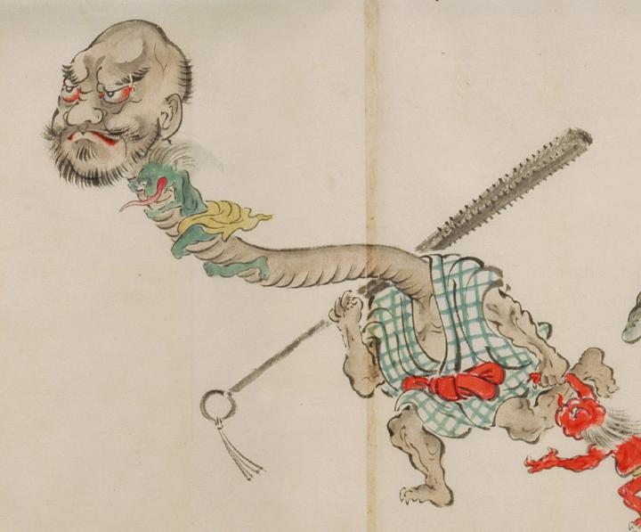

入道のような顔をした首の長い化物。青色の格子模様の着物に赤い帯を締めている。頭は大きく、額が割れ、口元と顎にひげを生やし、厳しい顔つきである。首は長く伸び、蛇腹のような皺が寄っている。緑色の化物が首に絡み付いている。手足に鋭い爪が生え、足は3本指に見える。右肩に金棒を担ぎ、左手で赤い化物の手をひき、左側に向って走っている。
出典：親書誌：U426_nichibunken_0053：化物婚礼絵巻；バケモノコンレイエマキ／日付：2006／資源識別子：U426_nichibunken_0053_0028_0002
Copyright (c)2010- International Research Center for Japanese Studies, Kyoto, Japan. All rights reserved.